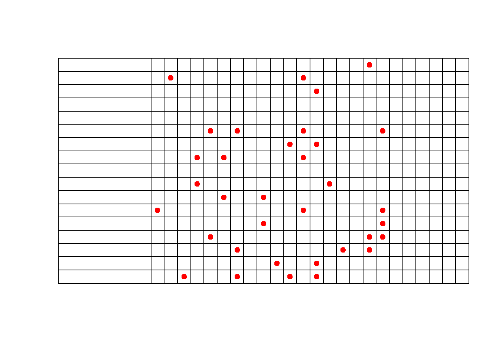
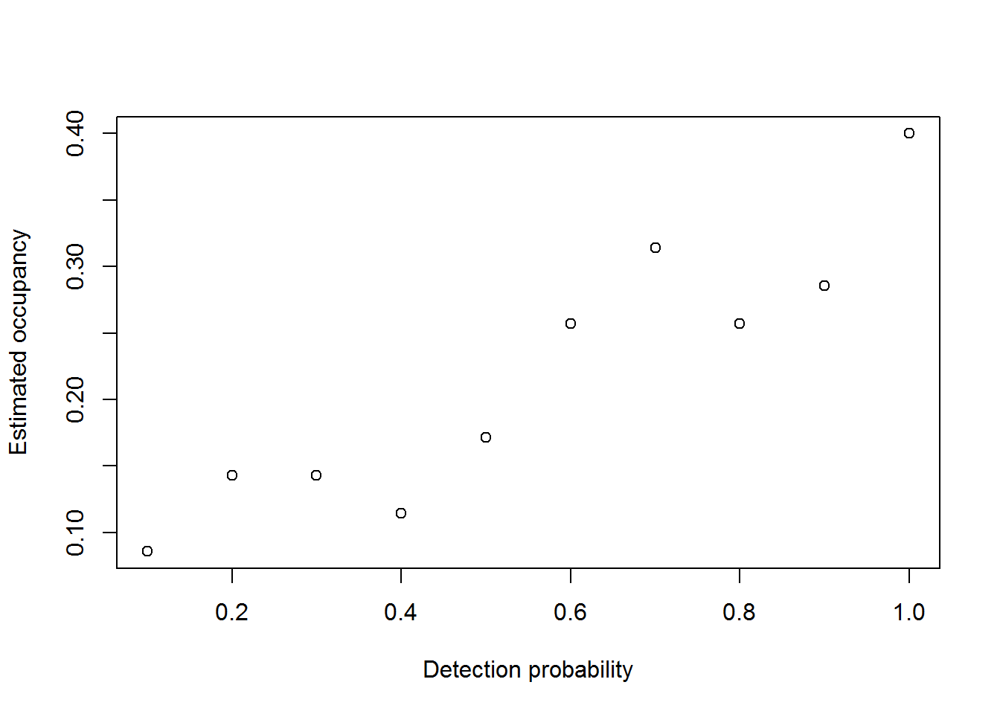
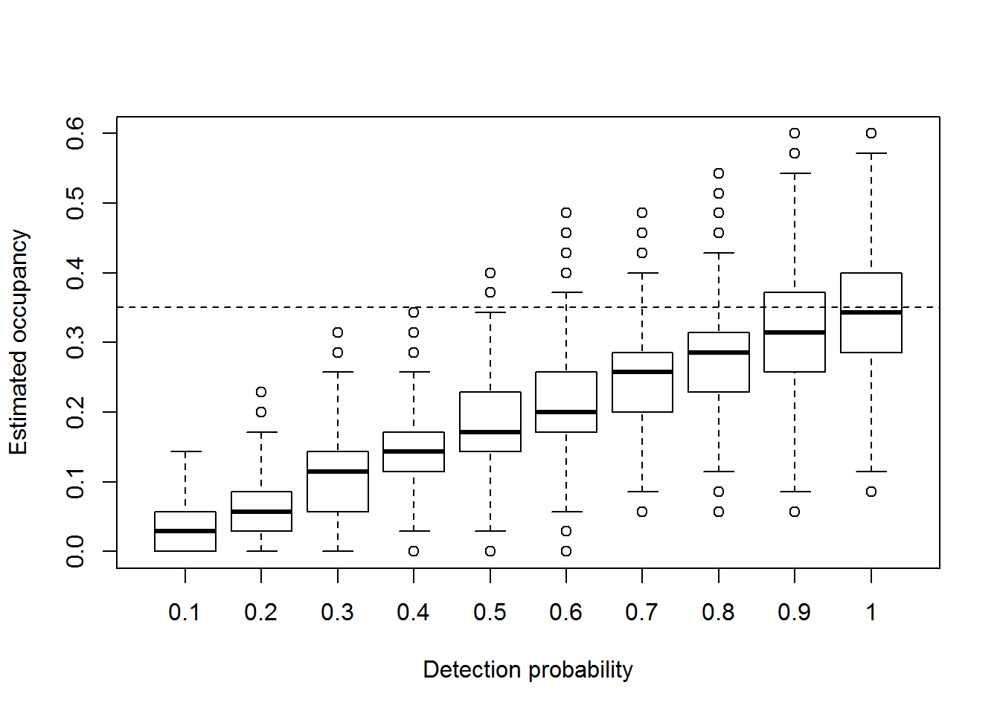
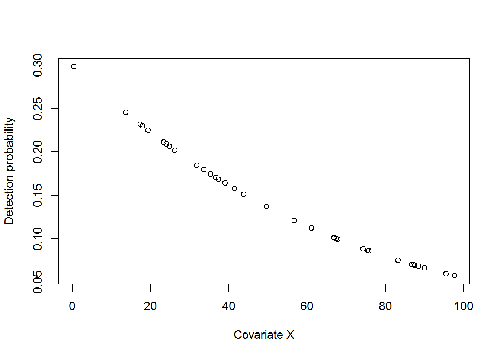
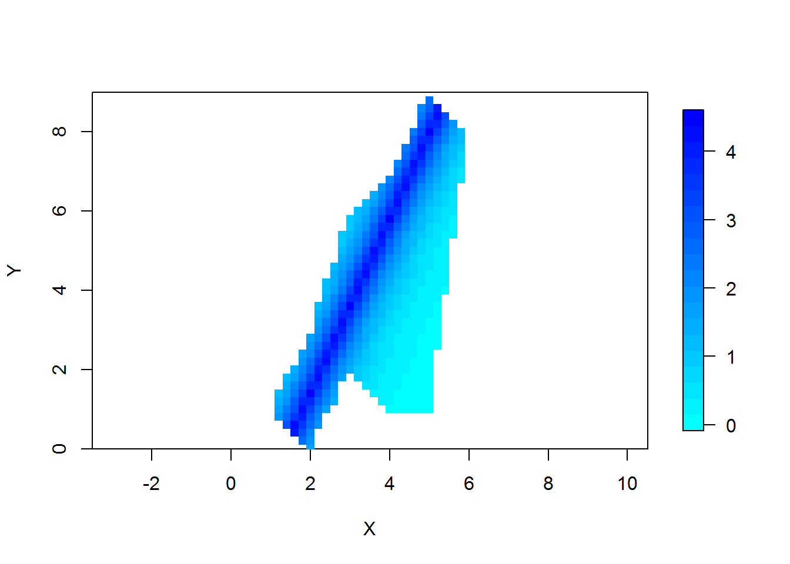
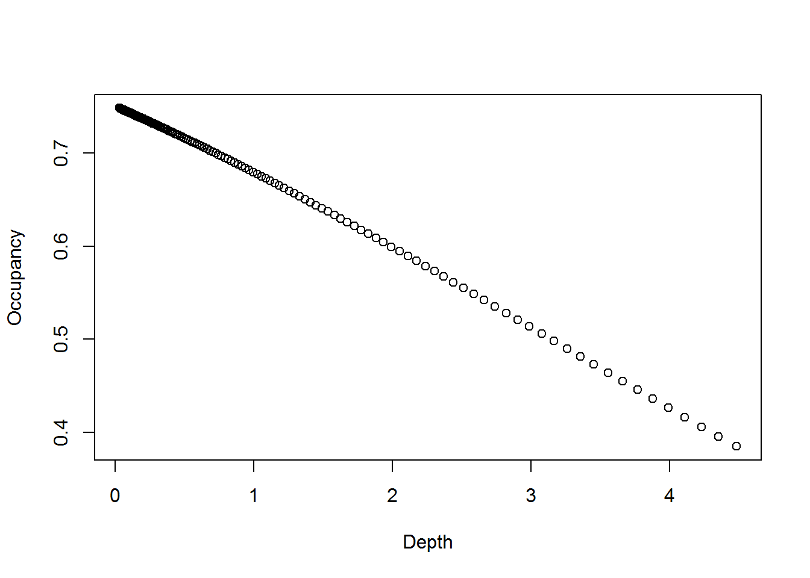
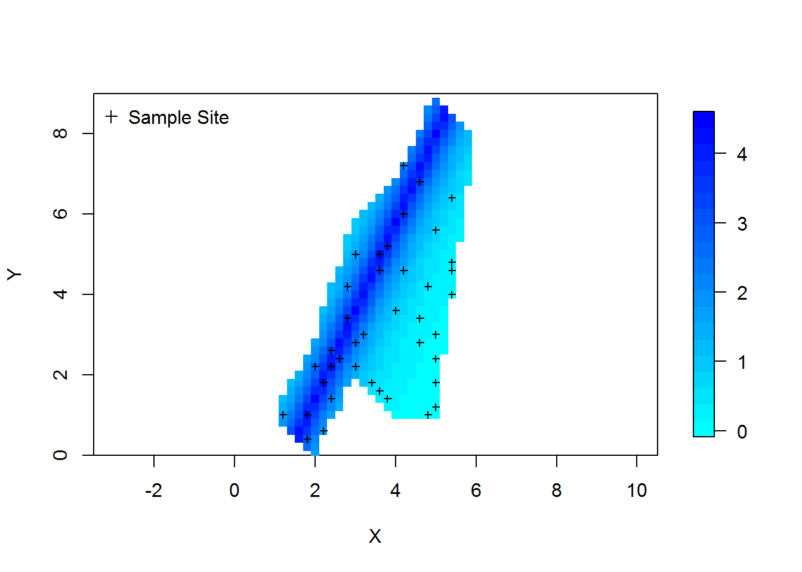
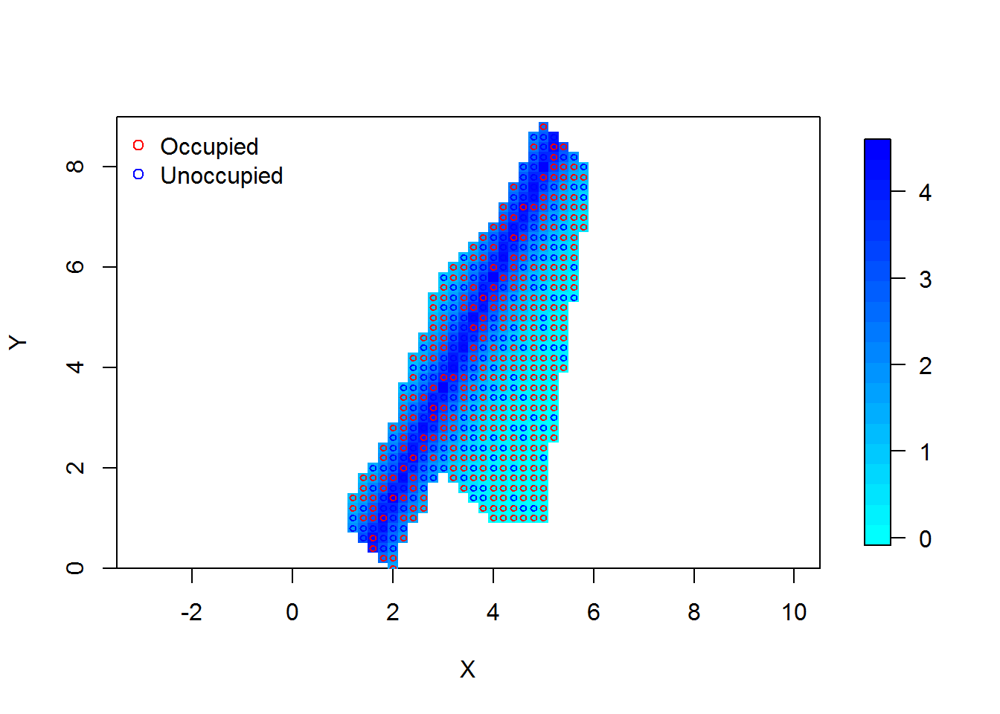
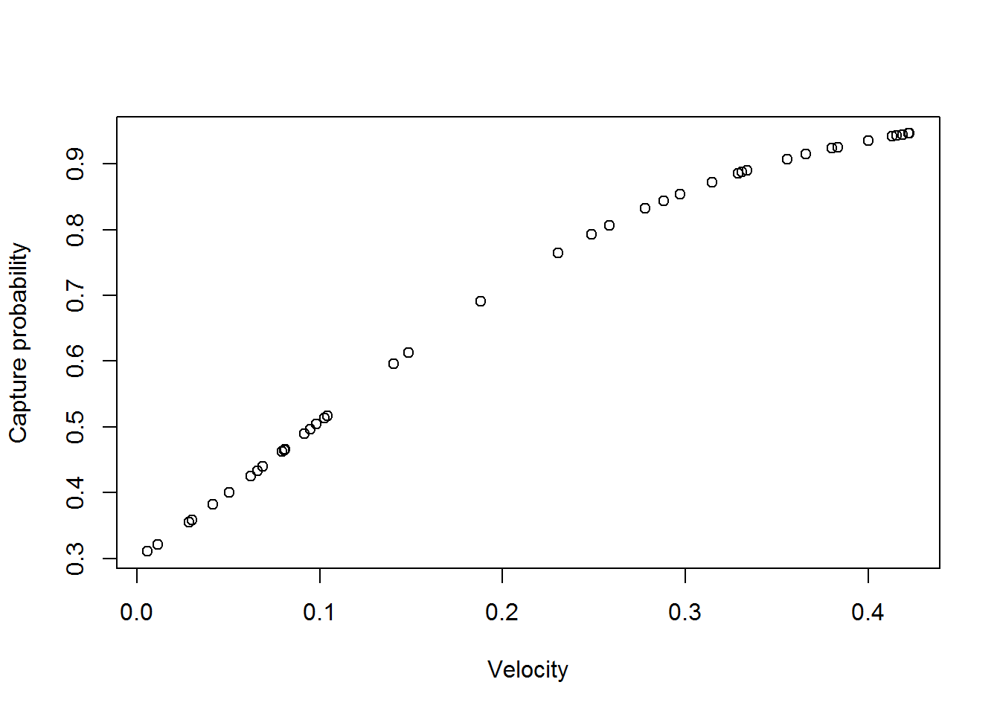
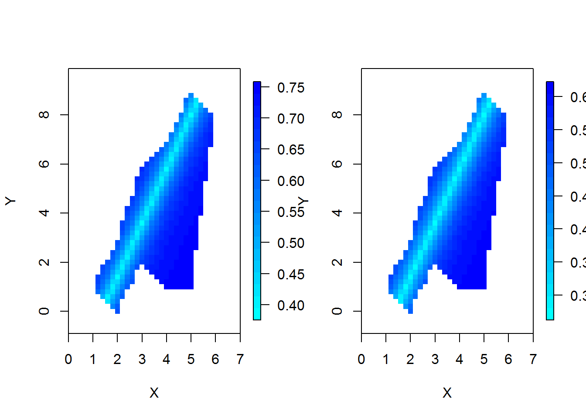

Class 16: Occupancy Part II
1 Class preliminaries
1.1 Housekeeping
- Dr. Mark Woodrey
- Guest speaker-last 10 minutes of class
- Application of Structured Decision Making to the Development of a Gulf of Mexico-wide Bird Monitoring Program March 10th at 11 am. Tully Auditorium.
- Supplemental background reading(s):
- Powell and Gale. Chapter 15: Occupancy Modeling here
- Assignment due: None
- Class project:
- Link to class recording YouTube
- Today’s R script Class-16.R
1.2 Class overview & objectives
This class will continue with occupancy estimation using unmarked individuals. We will use a combination of virtual By the end of this class you should be able to:
- Understand the consequences of imperfect detection
- simulate occupancy data with imperfect detection
- fit an occupancy model with
- homogenous occupancy rates and capture probabilities
- homogenous occupancy rates and heterogeneous capture probabilities
- heterogeneous occupancy rates and capture probabilities
- Predict occupancy rates for unsampled areas
1.3 Getting ready to go
- The R scipt for class can be found here
- If we get to it there will be one dataset we evaluate here
- Once you have the script where you want it it where you want open the R script and be sure to check the working directory
getwd()and make sure it is where your folder is. - If your working directory is not correct, you can set it in Rstudio: “Session –> Set Working Directory –> To source file location”. Or you can use the
setwd()in the console.
2 Simulating occupancy
2.1 Model and assumptions
Formally, occupancy models have 2 parts a process model (i.e., the model that predicts occupancy) and an observation model (i.e., the model that predicts whether a detection occurs given a critter is there). Formally, the process model (i.e., occupancy) is
\[logit(\psi_i) = \beta_{\psi,0}\]
and
\[Z_i \sim Bernoulli(\psi_i)\]
where * \(\beta_{\psi,0}\) is the intercept (beta_psi_0), * \(\psi_i\) is site specific occupancy rate (psi_i), * \(Z_i\) is the latent site occupancy status (Z+i), and * \(i\) indexes each site sampled (i).
The observation model is
\[logit(p_i) = \beta_{p,0}\]
and
$$Y_{i,t} Bernoulli(p_i),
where
- $Y_{i,t} is the site and occasion specific detection (
Y_i_t), - \(p_i\) is the detection probability (
p_i), - \(i\) indexes each site sampled, and (
i) , and - \(t\) indexes the observation occasion (
t).
Hopefully that looks familiar from working with GLMs…
Occupancy analysis assumes:
- Closure to change in occupancy status
- Occupancy is constant. Can be relaxed with covariates
- No false positives (i.e., detections when site is unoccupied)
- Surveys and sites are independent
See Powell and Gale 2015 for more detailed background of occupancy assumptions.
2.2 Occupancy
Having the skills to simulate the process and observation model will pay big returns, hopefully, because you can further your understanding of how these models work and also how the estimates will predict outcomes. We will simulate some data to further our understanding of occupancy.
2.3 Sampling frame
Suppose you have a study area that can be gridded into 300 units. The sampling domain might look like:

Its good, imagine being lucky enough to have a perfect square for a study area. The cells with points in them represent sites that are randomly sampled from the 324 potential cells.
The code below simulates a dataset with
- \(\beta_{\psi,0} = -0.6190392\)(\(\psi_i = 0.35\))
- A sampling frame of 324 points (
N) - A sample of 35 sites (
n)
First we need to simulate the population of sites, 324 to be exact. The code below
N<- 324
n=35
beta_psi_0<- -0.6190392 # set occupancy probability to 0.35
psi_i<- exp(beta_psi_0)/(1+exp(beta_psi_0))
psi_i # ## [1] 0.35Z_i<- rbinom(N,1,psi_i)
table(Z_i) # should be close to psi_i*N and (1-psi_i)*N## Z_i
## 0 1
## 217 107mean(Z_i)# should be close to 0.35## [1] 0.3302469For clarity lets make the status into a data.frame and number each site.
sites<- data.frame(id=c(1:N), occupied=Z_i)
# lets look at the first 10 rows of the data.frame
head(sites,10)## id occupied
## 1 1 0
## 2 2 1
## 3 3 0
## 4 4 1
## 5 5 0
## 6 6 0
## 7 7 0
## 8 8 0
## 9 9 0
## 10 10 1Now that we know what our sites are for occupancy status we can sample 35 of them to estimate occupancy! Remember we are assuming that \(p=1\) for now! The column “occupied” is the true occupancy status.
No we can sample our entire population, in this case without replacement using the sample() function. If you sampled like we do below with replacement that is a bootstrap replicate (i.e., sample with replacement as many observations as there are in the original dataset).
# the sample function takes a random sample
# of 35 sites without replacement
n<-35
# does a simple random sample
# by sampling a row number between 1 to N
my_sample<- sample(sites$id, n,replace=FALSE)
# The which() function returns the rows where
# the condition is true.
my_srs<- sites[which(sites$id %in% my_sample),]# get the samples
# look at our sites
head(my_srs)## id occupied
## 8 8 0
## 14 14 0
## 20 20 0
## 49 49 0
## 64 64 0
## 85 85 0Now we can do just as we did before, but now we are estimating occupancy.
table(my_srs$occupied) # should be close to psi*35 and (1-psi)*35##
## 0 1
## 25 10mean(my_srs$occupied)# should be close to psi## [1] 0.28571432.4 Perfect detection
Recall that \(p = 1\). So if we went out 4 times to the 35 sites we randomly selected the detection history would be 1111 because there is no chance we might miss detecting the critter. But lets prove this using simulation. Keep in mind that it is the site that is occupied so detection is conditional on whether or not a site is occupied. In other words you cannot detect a critter that is not there. This can be confusing… conditional? Hopefully some simulation will clarify this. To simulate this we use the rbinom() function again to simulate 0 and 1 where the 0s and 1s correspond detecting the critter. For this example we will go out on 4 occasions.
p_i<-1 # homogenous detection prob among sites
# occasion 1
occasion1<- rbinom(35,1,my_srs$occupied*p_i)
# occasion 2
occasion2<- rbinom(35,1,my_srs$occupied*p_i)
# occasion 3
occasion3<- rbinom(35,1,my_srs$occupied*p_i)
# occasion 4
occasion4<- rbinom(35,1,my_srs$occupied*p_i) Now we can put those together as a matrix of capture histories with each row representing sites and each column representing occasion. The cbind() function glues vectors together that can be made into a matrix or data.frame
detections<- cbind(occasion1,occasion2,occasion3,occasion4)
# lets look at the detections
head(detections)## occasion1 occasion2 occasion3 occasion4
## [1,] 0 0 0 0
## [2,] 0 0 0 0
## [3,] 0 0 0 0
## [4,] 0 0 0 0
## [5,] 0 0 0 0
## [6,] 0 0 0 0The big thing that you will notice above is that there are sites that are all 0s! This is where the conditional detection probability comes in, you cannot detect something that is not there, at least that is what we are assuming!
2.5 Imperfect detection
What happens when \(p_i < 1\)? Well we can simulate that too by simply changing \(p\) in the r code. Now lets do something extreme and pretend we can only detect the critter if it is there with a probability of 0.20.
Because \(p_i\) is less than 1 we can formally express \(p_i\) as we did in the observation model above as:
\[logit(p_i) = \beta_{p,0}\]
where the parameters are as defined above.
beta_p_0<- -1.386294 # 0.2 log odds
p_i<-exp(beta_p_0)/(1+exp(beta_p_0))
p_i## [1] 0.2000001Now we can generate the capture histories for each of the 4 occasions.
# occasion 1
occasion1<- rbinom(35,1,my_srs$occupied*p_i)
# occasion 2
occasion2<- rbinom(35,1, my_srs$occupied*p_i)
# occasion 3
occasion3<- rbinom(35,1, my_srs$occupied*p_i)
# occasion 4
occasion4<- rbinom(35,1, my_srs$occupied*p_i)
detections<- cbind(occasion1,occasion2,occasion3,occasion4)
head(detections) # lets look at the detections## occasion1 occasion2 occasion3 occasion4
## [1,] 0 0 0 0
## [2,] 0 0 0 0
## [3,] 0 0 0 0
## [4,] 0 0 0 0
## [5,] 0 0 0 0
## [6,] 0 0 0 0You will see now that there are a lot more 0s in the mix compared to when \(p = 1\)! But the one thing that remains that same is that sites where the ‘true’ occupancy status is 0 remain as ‘0000’ but now we may have a few instance where site occupancy = 1 but the detection history is ‘0000’ as well.
We can look at those instances by figuring out by binding the column of occupancy status for each site to the detection history.
head(cbind(detections, my_srs$occupied))## occasion1 occasion2 occasion3 occasion4
## [1,] 0 0 0 0 0
## [2,] 0 0 0 0 0
## [3,] 0 0 0 0 0
## [4,] 0 0 0 0 0
## [5,] 0 0 0 0 0
## [6,] 0 0 0 0 0Now you can look at what sites are occupied but the critter was not detected!
2.6 Naive occupancy estimates
A naive way to estimate occupancy is to determine sites where the critter was detected in 1 or more occasions and use that as an occupancy estimate. Let’s see how that goes here, recall that \(\psi = 0.35\) and therefore this naive estimate should be close or else the estimate is biased. We can easily figure out how many detections at each site by using the rowSums() function, which does what it says, sums the rows. Then if you use the ifelse() function to say if a value is greater than 0 then make it 1 and if not then 0. Then if you take the average of the 0s and 1s you get the naive estimate of occupancy.
no_detections<- rowSums(detections)# how many detections
occupied<- ifelse(no_detections>0,1,0) # assign sites as occupied or not
mean(occupied) # close to 0.35?## [1] 0.08571429Well that 0.0857143 is not equal to 0.35! In fact that is the whole reason for occupancy models, occupancy estimates are underestimated if \(p < 1\)!
Imagine if you had only done 1 occasion, the estimated occupancy would have been 0.0285714 which is even worse! This is what happens most of the time, single occasions, so lets explore the consequences of this on estimated occupancy.
2.7 Effects of imperfect detection
Let’s explore this for a range of \(p_i\) from 0.1 to 1 to examine that effect, assuming detection probability is homogenous among sites. Recall that \(\psi= 0.35\).
beta_psi_0<- -0.6190392 # set occupancy probability to 0.35
psi_i<- exp(beta_psi_0)/(1+exp(beta_psi_0))
psi_i # ## [1] 0.35Now we can set our values for \(p\). We will forgo using the \(\beta\) and log odds and simply specify the probability for ease. Plus we can easily loop over the values of p to rapidly evaluate the effect of imperfect detection.
p_i<- seq(0.1,1,0.1)
p_i## [1] 0.1 0.2 0.3 0.4 0.5 0.6 0.7 0.8 0.9 1.0Now we can loop over \(p_i\) to get an estimate of occupancy and the consequences of assuming perfect detection using our 35 sites.
# define object to save the naive
# occupancy estimates
output<- data.frame(p_i=p_i,
occupancy_est=NA)
for(i in 1:length(p_i))
{
# OBSERVATION 1 OF ALL 35 SITES
occasion1<- rbinom(n,1,psi_i*p_i[i])
output$occupancy_est[i]<- mean(occasion1)
} And we can look at them.
plot(occupancy_est~p_i,
data=output,
xlab="Detection probability",
ylab="Estimated occupancy")
Well that plot is sort of clean. This is a stochastic process so we should do many simulations for each value of \(p_i\) we evaluate. Let’s do that. First we will make a matrix to hold all of our outputs.
# define matrix to save outputs to for 1000 replicates
occupancy_est<- matrix(NA,nrow=1000,ncol=length(p_i)) Now we can loop over each \(p_i\) and then perform 1000 stochastic replicates in the inner loop.
for(i in 1:length(p_i)) #loop over p
{
for(rep in 1:1000) # do 1000 stochastic replicates
{
# simulate observations
occasion1<- rbinom(35,1,psi_i*p_i[i])
# calculate naive occupancy
occupancy_est[rep,i]<-mean(occasion1)
}
}Now we can plot the replicates by each value of \(p_i\) we evaluated.
boxplot(occupancy_est,
xlab="Detection probability",
ylab="Estimated occupancy",
names=p_i) # name the x axis as the values of p
# add a line for the true value of psi
abline(h=psi_i,lty=2) 
So, as you can see from the boxplots occupancy estimates are negatively biased when \(p < 1\)! So it makes good sense to account for imperfect detection.
2.8 Accounting for imperfect detection
Occupancy models estimate both \(\psi_i\) and \(p_i\) from detection histories assuming that \(p_i\) is the conditional capture probability. Let’s see how an occupancy model for \(p_i = 0.3\) works!
Let’s simulate our detection histories from our original random sample. Remember the data we simulated in my_srs?
beta_p_0<- -0.8472979 # set p to 0.3
p_i<- exp(beta_p_0)/(1+exp(beta_p_0))
p_i # ## [1] 0.3occasion1<- rbinom(35,1,my_srs$occupied*p_i)
occasion2<- rbinom(35,1, my_srs$occupied*p_i)
occasion3<- rbinom(35,1, my_srs$occupied*p_i)
occasion4<- rbinom(35,1, my_srs$occupied*p_i)
detections<- cbind(occasion1,occasion2,occasion3,occasion4)
head(detections) # lets look at the detections## occasion1 occasion2 occasion3 occasion4
## [1,] 0 0 0 0
## [2,] 0 0 0 0
## [3,] 0 0 0 0
## [4,] 0 0 0 0
## [5,] 0 0 0 0
## [6,] 0 0 0 0Ok, looks great, some 1s but mostly 0s.
Now lets fit an occupancy model to the data. First we need the unmarked package to do so.
#install.packages("unmarked")
library(unmarked)Now we need to get our detections into a matrix for unmarked.
detections<- unmarkedFrameOccu(detections,
siteCovs=NULL,
obsCovs=NULL)
head(detections)## Data frame representation of unmarkedFrame object.
## y.1 y.2 y.3 y.4
## 1 0 0 0 0
## 2 0 0 0 0
## 3 0 0 0 0
## 4 0 0 0 0
## 5 0 0 0 0
## 6 0 0 0 0
## 7 0 0 0 0
## 8 0 1 0 1
## 9 1 0 0 0
## 10 0 0 0 0Note we do not have any site or observation covariates at this point and therefore they are NULL.
Now we can fit an occupancy model. Note that in the model equation the first tilda is for occupancy and the second is for detection. This becomes important once you are using covariates.
fit <- occu(~ 1 ~ 1, detections)
fit##
## Call:
## occu(formula = ~1 ~ 1, data = detections)
##
## Occupancy:
## Estimate SE z P(>|z|)
## -1.22 0.459 -2.65 0.00796
##
## Detection:
## Estimate SE z P(>|z|)
## -0.377 0.46 -0.82 0.412
##
## AIC: 76.22952Well crappola, that does not make much sense, \(p\) was 0.2 and \(\psi\) was 0.35 but the estimates are -1.2181207 for occupancy and -0.3772526 for detection probability.
We can extract the estimates from the fitted model as:
coef(fit)[1]# occupancy## psi(Int)
## -1.218121coef(fit)[2]# detection## p(Int)
## -0.3772526As is the case with most binary (0,1) data the linear models use a logit transformation and this estimates are on logit scale. If we want the actual values we need to simple take the estimate and run in through the equation \(exp(est)/(1+exp(est))\)
occ_est_lo<- coef(fit)[1]# occupancy logit
exp(occ_est_lo)/(1+exp(occ_est_lo)) # it is close to 0.35!## psi(Int)
## 0.2282673det_est_lo<- coef(fit)[2]# detection logit
exp(det_est_lo)/(1+exp(det_est_lo)) # it is close to 0.2!## p(Int)
## 0.4067897Fortunately unmarked can do that for you as well.
# back transform occupancy
backTransform(fit, type="state")## Backtransformed linear combination(s) of Occupancy estimate(s)
##
## Estimate SE LinComb (Intercept)
## 0.228 0.0809 -1.22 1
##
## Transformation: logistic# back transform detection probability
backTransform(fit, type="det")## Backtransformed linear combination(s) of Detection estimate(s)
##
## Estimate SE LinComb (Intercept)
## 0.407 0.111 -0.377 1
##
## Transformation: logistic3 Covariates and detection probability
Now we can relax the assumption that detection probability is heterogeneous. Heterogeneity might arise because of weather variation among occasions, variation among observers, habitat variability and so on. In this section we will assuming heterogeneous capture probabilities that are related a covariate \(X_i\) that varies among site \(i\). Formally, the process model (i.e., occupancy) remains the same as above and is
\[logit(\psi_i) = \beta_{\psi,0}\]
and
\[Z_i \sim Bernoulli(\psi_i)\]
where the parameters are as defined above. The observation model is modified so that there is now an effect of a covariate on detection probility.
\[logit(p_i) = \beta_{p,0}+\beta_{p,1}\cdot X_i\]
and
$$Y_{i,t} Bernoulli(p_i),
where the parameters are as defined above but we have a new parameter \(\beta_{p,1}\) which is the effect of covariate \(X\) on detection probability. Let’s put our simulation skills to the test and see if we can simulate the from process and observation models. First we need to simulate the occupancy process. Let’s use the same data we simulated above, my_srs for this section.
head(my_srs)# the true occupancy## id occupied
## 8 8 0
## 14 14 0
## 20 20 0
## 49 49 0
## 64 64 0
## 85 85 0Now let’s specify a relationship between a detection probability and a covariate \(X\).
beta_p_0<- -0.8472979 # set p to 0.3
beta_p_1<- -0.02 #
my_srs$X<- runif(n,0,100)
# log odds detection probability
my_srs$lo_p_i<- beta_p_0+beta_p_1*my_srs$X
# detection probability
my_srs$p_i<-exp(my_srs$lo_p_i)/(1+exp(my_srs$lo_p_i))There we have a detection probability that varies among sites as a function of \(X_i\). Let’s take a look.
plot(p_i~X,my_srs,
xlab="Covariate X",
ylab="Detection probability") Looks like detection probability declines with \(X_i\). Now we can do just as we did before and simulate the observations.
occasion1<- rbinom(35,1,my_srs$occupied*p_i)
occasion2<- rbinom(35,1, my_srs$occupied*p_i)
occasion3<- rbinom(35,1, my_srs$occupied*p_i)
occasion4<- rbinom(35,1, my_srs$occupied*p_i)
detections<- cbind(occasion1,occasion2,occasion3,occasion4)
head(detections) # lets look at the detections## occasion1 occasion2 occasion3 occasion4
## [1,] 0 0 0 0
## [2,] 0 0 0 0
## [3,] 0 0 0 0
## [4,] 0 0 0 0
## [5,] 0 0 0 0
## [6,] 0 0 0 0Now we can format the data and the covariates for analysis. first we need to make the covariates a data.frame.
site_covs<- my_srsNow we can make the unmarked data.frame needed for analysis.
detections<- unmarkedFrameOccu(y=detections,
siteCovs=site_covs,
obsCovs=NULL)
head(detections)## Data frame representation of unmarkedFrame object.
## y.1 y.2 y.3 y.4 id occupied X lo_p_i p_i
## 8 0 0 0 0 8 0 23.43288 -1.315956 0.21149197
## 14 0 0 0 0 14 0 39.07438 -1.628785 0.16399681
## 20 0 0 0 0 20 0 67.89378 -2.205174 0.09928686
## 49 0 0 0 0 49 0 49.62402 -1.839778 0.13707752
## 64 0 0 0 0 64 0 24.09151 -1.329128 0.20930362
## 85 0 0 0 0 85 0 13.67836 -1.120865 0.24585086
## 90 0 0 0 0 90 0 61.10899 -2.069478 0.11209901
## 99 0 0 1 0 99 1 87.14266 -2.590151 0.06977497
## 101 0 1 0 0 101 1 26.31078 -1.373513 0.20205279
## 105 0 0 0 0 105 0 36.71124 -1.581523 0.17057993Note we do not have any site or observation covariates at this point and therefore they are NULL.
Now we can fit an occupancy model. Note that in the model equation the first tilda is for detection and the second is for occupancy. We can specify the covariate for detection probability.
fit <- occu(~ X ~ 1, detections)
fit##
## Call:
## occu(formula = ~X ~ 1, data = detections)
##
## Occupancy:
## Estimate SE z P(>|z|)
## -0.469 0.65 -0.721 0.471
##
## Detection:
## Estimate SE z P(>|z|)
## (Intercept) -1.161188 1.2011 -0.9668 0.334
## X 0.000273 0.0164 0.0166 0.987
##
## AIC: 88.32565We can extract the estimates from the fitted model as:
coef(fit)[1]# occupancy## psi(Int)
## -0.4687775coef(fit)[2]# detection## p(Int)
## -1.161188As is the case with most binary (0,1) data the linear models use a logit transformation and this estimates are on logit scale. If we want the actual values we need to simple take the estimate and run in through the equation \(exp(est)/(1+exp(est))\)
occ_est_lo<- coef(fit)[1]# occupancy logit
exp(occ_est_lo)/(1+exp(occ_est_lo)) ## psi(Int)
## 0.3849056det_est_lo<- coef(fit)[2]# detection logit
exp(det_est_lo)/(1+exp(det_est_lo)) ## p(Int)
## 0.23845154 Covariates and occupancy
Now we can add a covariate to occupancy and detection. Suppose we have a sampling domain that looks like the figure below.
## Warning: package 'reshape2' was built under R version 3.1.3##
## Attaching package: 'reshape2'## The following objects are masked from 'package:reshape':
##
## colsplit, melt, recast The data for the domain above can be read in as below.
dat<- read.csv("occ-01.csv")The increasing blue intensity represents increasing depth. Within the polygon above the true occupancy of a critter is related to depth. Specifically, the occupancy decreases with depth.
beta_psi_0<- 1.1
beta_psi_1<- -0.35 #
# log odds occupancy
dat$lo_psi_i<- beta_psi_0+beta_psi_1*dat$depth
# detection probability
dat$psi_i<-exp(dat$lo_psi_i)/(1+exp(dat$lo_psi_i))And we plot the relationship of \(\psi_i\) to get a sense for what is going on.
plot(psi_i~depth,
data=dat,
xlab="Depth",
ylab="Occupancy")
And we can simulate whether a site is occupied or not.
N<- nrow(dat)
dat$occupancy<- rbinom(N,1,dat$psi_i)Suppose can sample 40 sites (n) out of the 524 possible sites (N). That would look like the image below.
Note that this approach was a bit different then the approach above that we used the which() statement. If we wanted to plot the data above we can plot x,y, data with z data, depth in this case using the image.plot() function within the fields package.
#install.packages("fields")
library(fields)## Warning: package 'fields' was built under R version 3.1.3## Loading required package: spam## Warning: package 'spam' was built under R version 3.1.3## Loading required package: grid## Spam version 1.3-0 (2015-10-24) is loaded.
## Type 'help( Spam)' or 'demo( spam)' for a short introduction
## and overview of this package.
## Help for individual functions is also obtained by adding the
## suffix '.spam' to the function name, e.g. 'help( chol.spam)'.##
## Attaching package: 'spam'## The following object is masked from 'package:unmarked':
##
## mle## The following objects are masked from 'package:base':
##
## backsolve, forwardsolve## Loading required package: maps## Warning: package 'maps' was built under R version 3.1.3##
## # maps v3.1: updated 'world': all lakes moved to separate new #
## # 'lakes' database. Type '?world' or 'news(package="maps")'. #library(reshape2)
depths<- dcast(dat,x~y,value.var="depth")
x<-depths[,1]
y<-as.numeric(names(depths[-1]))
depths<- as.matrix(depths[,-1])
image.plot(x,y,depths,xlim=c(0,7),xlab="X",
ylab="Y",
ylim=c(0,9),
col=rainbow(n=20,start=3/6,end=4/6),
asp=1)
points(y~x,sampleSites, pch=3,col="black",
cex=0.6)
legend("topleft",legend="Sample Site",pch=3,bty='n')
4.1 Occupancy
Given the occupancy rates we can simulate the occupancy status for the habitat above.
Let’s get a better feel for what is going down here.
# create new plot of depths
image.plot(x,y,depths,xlim=c(0,7),xlab="X",
ylab="Y",
ylim=c(0,9),
col=rainbow(n=20,start=3/6,end=4/6),
asp=1)
points(y~x,
data=dat,
pch=1,
col="red",
cex=0.6,
subset=occupancy==1)
points(y~x,
data=dat,
pch=1,
col="blue",
cex=0.6,
subset=occupancy==0)
legend("topleft",
legend=c("Occupied","Unoccupied"),
pch=1,
col=c("red","blue"),
bty='n') The true occupancy is the mean of each site.
true_occ<- mean(dat$occupancy)
true_occ## [1] 0.5935115But it varies by depth so the true abundance is a bit tough to interpret.
4.2 Generate capture histories
The code below generates detections at 20 sites over 5 occasions given the abundance at the site and a capture probability that is also related to depth.
beta_p_0<- -0.8472979 # set p to 0.3
beta_p_1<- 8.8 #
# log odds detection probability
sampleSites$lo_p_i<- beta_p_0+beta_p_1*sampleSites$velocity
# detection probability
sampleSites$p_i<-exp(sampleSites$lo_p_i)/(1+exp(sampleSites$lo_p_i))And we can look at the detection probabilities.
plot(p_i~velocity,
data=sampleSites,
xlab="Velocity",
ylab="Capture probability")
And now that we have that we can simulate the detection history matrix assuming we go out 5 times to each site.
# GENERATE CAPTURE HISTORIES
nocc<-5
Y_i_t<- matrix(0,n,nocc)
for(i in 1:nocc)
{
# FILL EACH ROW WITH DETECTIONS [0,1]
Y_i_t[,i]<- rbinom(n,1,sampleSites$p_i*sampleSites$occupancy)
}The simulated catch at each of the 40 sites for 5 occasions is shown below.
## [,1] [,2] [,3] [,4] [,5]
## [1,] 0 0 0 0 0
## [2,] 0 0 0 0 0
## [3,] 0 0 0 0 0
## [4,] 0 0 0 0 0
## [5,] 0 0 0 0 0
## [6,] 1 1 1 1 1Now we can work our magic and fit the occupancy model that relates occupancy and detection to depth.
site_covs<- sampleSitesNow we can make the unmarked data.frame needed for analysis.
detections<- unmarkedFrameOccu(y=Y_i_t,
siteCovs=site_covs,
obsCovs=NULL)
head(detections)## Data frame representation of unmarkedFrame object.
## y.1 y.2 y.3 y.4 y.5 x y siteId depth velocity lo_psi_i
## 226 0 0 0 0 0 4.6 3.4 226 0.30305009 0.32876857 0.9939325
## 313 0 0 0 0 0 3.6 4.6 313 3.55469886 0.10402062 -0.1441446
## 341 0 0 0 0 0 3.6 5.0 341 4.22943150 0.05040558 -0.3803010
## 18 0 0 0 0 0 1.2 1.0 18 1.67388788 0.14848681 0.5141392
## 82 0 0 0 0 0 2.2 1.8 82 4.35373368 0.03000333 -0.4238068
## 117 1 1 1 1 1 2.4 2.2 117 4.22943150 0.41297257 -0.3803010
## 21 1 0 1 1 1 1.8 1.0 21 4.35373368 0.33358020 -0.4238068
## 115 0 0 0 0 0 2.0 2.2 115 2.51098694 0.38320440 0.2211546
## 45 1 1 1 1 1 5.0 1.2 45 0.03257354 0.41867716 1.0885993
## 95 1 1 1 1 1 5.0 1.8 95 0.05029941 0.23033285 1.0823952
## psi_i occupancy lo_p_i p_i
## 226 0.7298640 0 2.04586553 0.8855292
## 313 0.4640261 0 0.06808358 0.5170143
## 341 0.4060543 0 -0.40372876 0.4004168
## 18 0.6257763 0 0.45938606 0.6128685
## 82 0.3956062 0 -0.58326862 0.3581808
## 117 0.4060543 1 2.78686067 0.9419617
## 21 0.3956062 1 2.08820783 0.8897517
## 115 0.5550644 0 2.52490078 0.9258691
## 45 0.7481179 1 2.83706109 0.9446460
## 95 0.7469470 1 1.17963115 0.7648815And we can fit the occupancy model.
fit <- occu(~ velocity ~ depth, detections)
fit##
## Call:
## occu(formula = ~velocity ~ depth, data = detections)
##
## Occupancy:
## Estimate SE z P(>|z|)
## (Intercept) 0.469 0.533 0.881 0.378
## depth -0.325 0.232 -1.399 0.162
##
## Detection:
## Estimate SE z P(>|z|)
## (Intercept) -1.16 0.562 -2.07 3.88e-02
## velocity 10.04 2.481 4.05 5.22e-05
##
## AIC: 144.5498Now the fun thing is that you can predict the occupancy rate back to the sampling frame. We can extract the coefficients using the coef() function and then use our understanding of linear models to generate the predictions.
betas<- coef(fit)
dat$pred_lo_psi<- betas[1] + betas[2]*dat$depth
dat$psi_hat_i<- exp(dat$pred_lo_psi)/(1+exp(dat$pred_lo_psi))And we can plot and compare.
par(mfrow=c(1,2),oma=c(1,2,1,2))
# TRUE PSI
psi_true<- dcast(dat,x~y,value.var="psi_i")
x<-psi_true[,1]
y<-as.numeric(names(psi_true[-1]))
psi_true<- as.matrix(psi_true[,-1])
image.plot(x=x,
y=y,
z=psi_true,
xlim=c(0,7),
breaks=seq(0,1,0.1),
xlab="X",
ylab="Y",
ylim=c(0,9),
col=rainbow(n=10,start=3/6,end=4/6),
asp=1)
# ESTIMATED PSI
psi_est<- dcast(dat,x~y,value.var="psi_hat_i")
x<-psi_est[,1]
y<-as.numeric(names(psi_est[-1]))
psi_est<- as.matrix(psi_est[,-1])
image.plot(x=x,
y=y,
z=psi_est,
xlim=c(0,7),
breaks=seq(0,1,0.1),
xlab="X",
ylab="Y",
ylim=c(0,9),
col=rainbow(n=10,start=3/6,end=4/6),
asp=1)